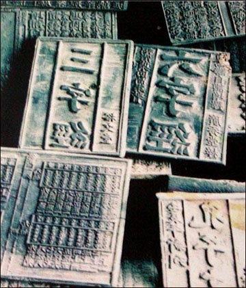

| 1. | 造纸术 | 造纸术，是中国四大发明之一，发明于西汉时期、改进于东汉时期。中国是世界上最早养蚕织丝的国家，中国古代劳动人民以上等蚕茧抽丝织绸，剩下的恶茧、病茧等则用漂絮法制取丝绵。漂絮完毕，篾席上会遗留一些残絮。当漂絮的次数多了，篾席上的残絮便积成一层纤维薄片，经晾干之后剥离下来，可用于书写。这种漂絮的副产物数量不多，在古书上称它为赫蹏或方絮。 东汉时蔡伦在京师洛阳任尚方令期间。经常到洛阳近郊（今洛阳偃师区缑氏镇附近）收集制作材料，创造了以树皮、麻头、破布、旧渔网为原料的造纸术。造纸术后来从都城洛阳向其他地区传播。造纸术既方便了人们书写，又促进了文化传播。公元7世纪造纸术传入日本，公元8世纪造纸术传到欧洲各国，造纸术的广泛传播，对人类文化事业的发展起到重大作用。 轻工业部造纸工业科学研究所（现中国制浆造纸研究院）曾对发现的几种古纸进行科学的化学分析和化验结果得出的结论：只有蔡侯纸才是真正的纸。1990年8月18日至22日在比利时马尔梅迪举行的国际造纸历史协会第20届代表大会上专家一致认定：蔡伦是造纸术的伟大发明家，中国是造纸的发明国。 |
| 2. | 指南针 | 指南针，古代叫司南，主要组成部分是一根装在轴上的磁针，磁针在天然地磁场的作用下可以自由转动并保持在磁子午线的切线方向上，磁针的南极指向地理南极(磁场北极)，利用这一性能可以辨别方向。 常用于航海、大地测量、旅行及军事等方面。物理上指示方向的指南针的发明有三类部件，分别是司南、罗盘和磁针，均属于中国的发明。 [1] 据《古矿录》记载最早出现于战国时期的磁山一带。 [2] 指南针是中国古代劳动人民在长期的实践中对磁石磁性认识的结果。作为中国古代四大发明之一，它的发明对人类的科学技术和文明的发展，起了无可估量的作用。在中国古代，指南针起先应用于祭祀、礼仪、军事和占卜与看风水时确定方位。 |
| 3. | 火药 | 火药，顾名思义，可由火花、火焰等引起剧烈燃烧的药剂。据《范子计然》的记载，春秋时代中国就已经用于民间民生应用，范子计然说“硝石出陇道”。 火药是中国四大发明之一。是在适当的外界能量作用下，自身能进行迅速而有规律的燃烧，同时生成大量高温燃气的物质。在军事上主要用作枪弹、炮弹的发射药和火箭、导弹的推进剂及其他驱动装置的能源，是弹药的重要组成部分。人类文明史上的一项杰出的成就。火药是以其杀伤力和震慑力，带给人类消停战事、安全防卫的作用，成为了人类文明重要发明之一。 |
| 4. | 印刷术 | 印刷术是中国古代劳动人民的四大发明之一。雕版印刷术发明于唐朝，并在唐朝中后期普遍使用。 [1] 宋仁宗时毕昇发明了活字印刷术标志着活字印刷术的诞生。他是世界上第一个发明人，比德国人约翰内斯·古腾堡的铅活字印刷术早约400年标志着活字印刷术的诞生。 [2] 印刷术是人类近代文明的先导，为知识的广泛传播、交流创造了条件。印刷术先后传到朝鲜、日本、中亚，西亚和欧洲地区。 |
蔡伦
汉朝造纸工艺流程图
火药的应用

火炮
现代枪械
华昇

雕版印刷术

活字印刷术
指南针的前身
现代指南针